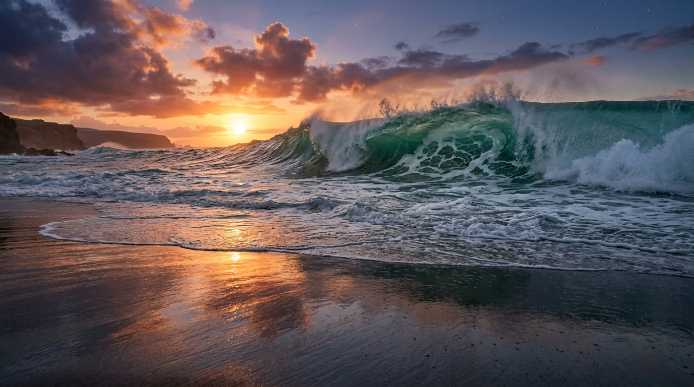
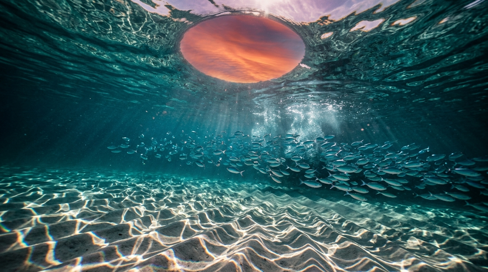

Drag to look around • Scroll or W/S/E/Q to move & dive • Click Dive Underwater to submerge beneath the breakers and look up through Snell's Window at the clouds & stars.

Target 1: 8K Beach Shoreline (Asymmetric Plunging Wave, Voronoi Foam & Headland)
Target 2: 8K Underwater Snell's Window, Chromatic Caustics & 415 Fusiliers